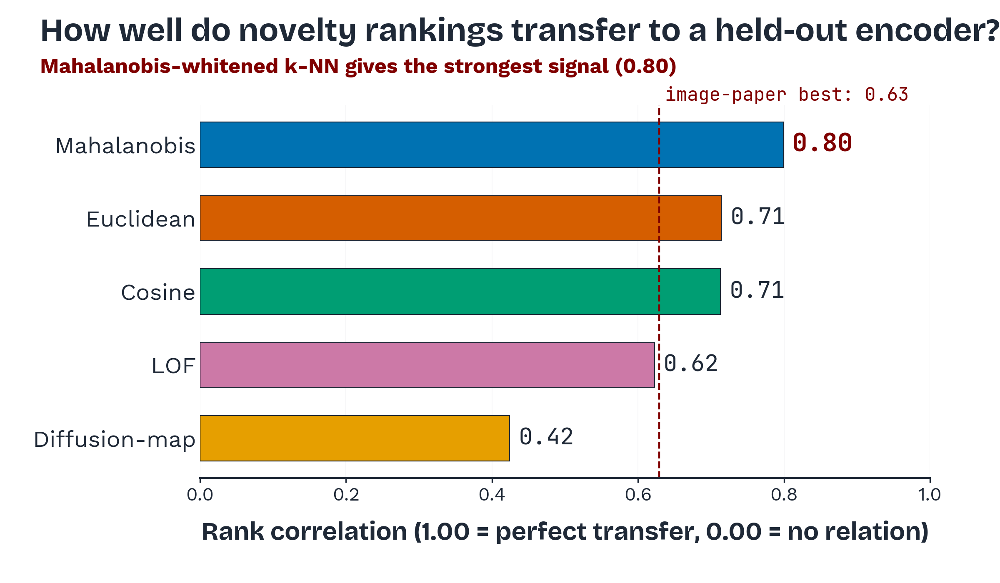
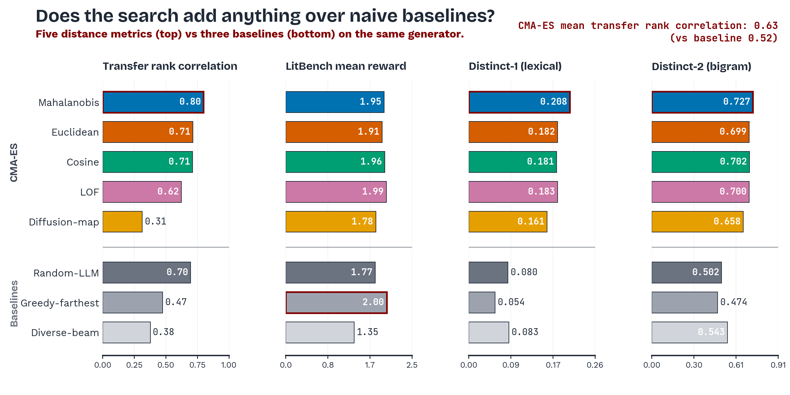
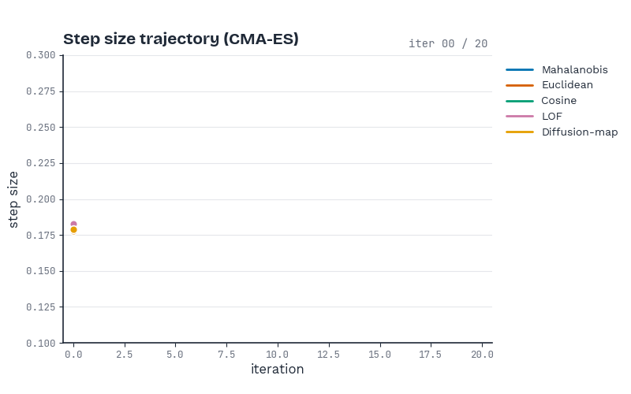
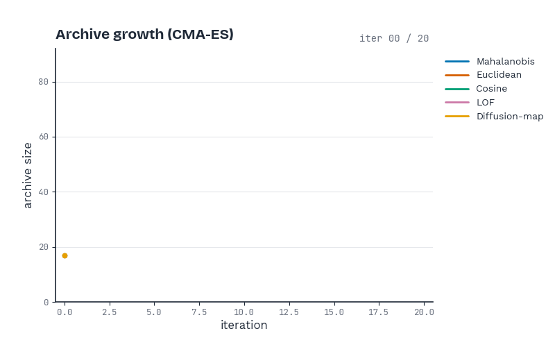
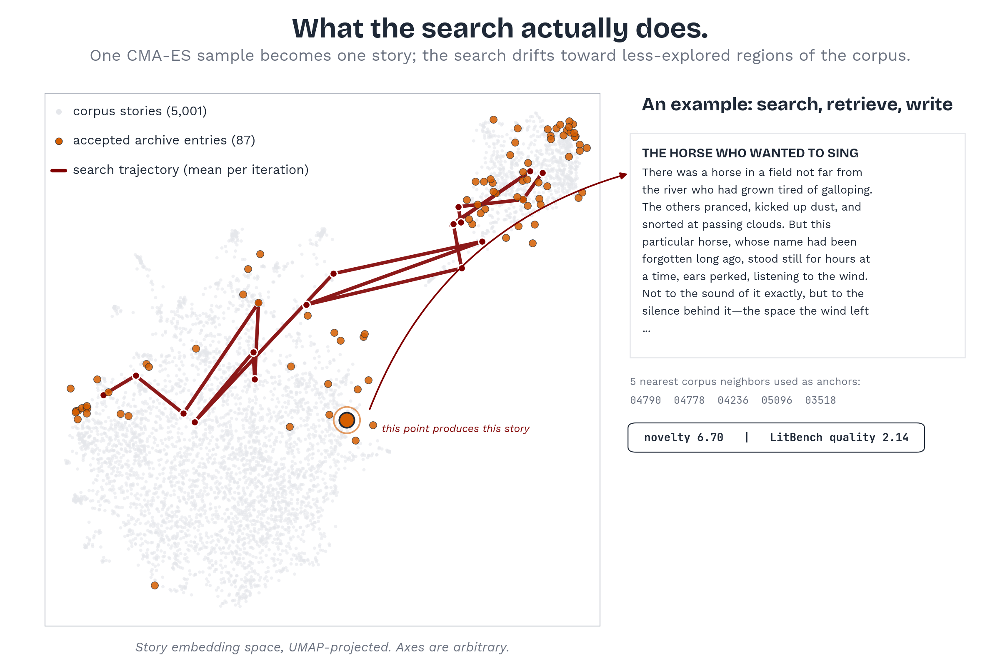
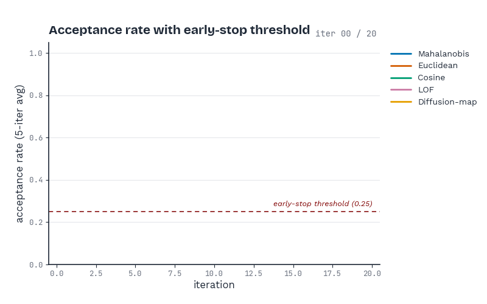
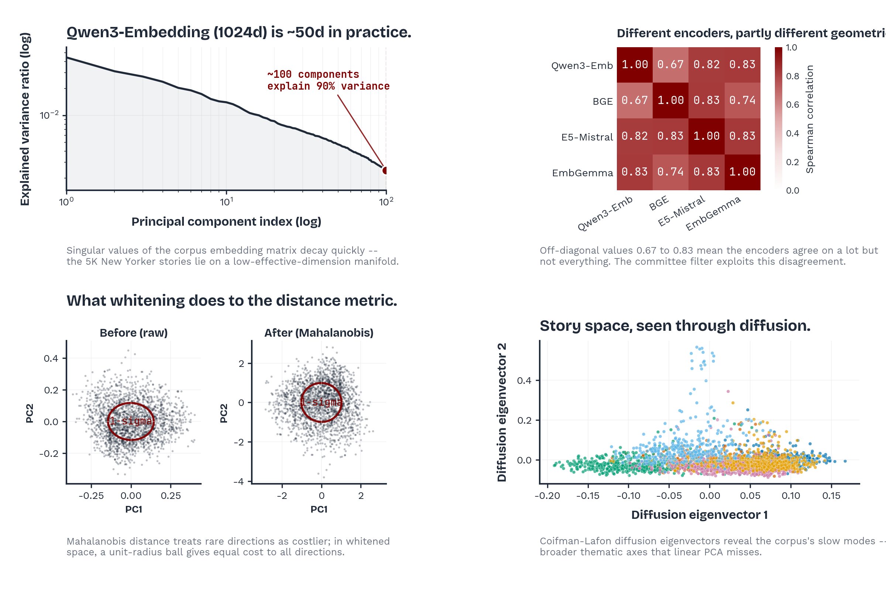
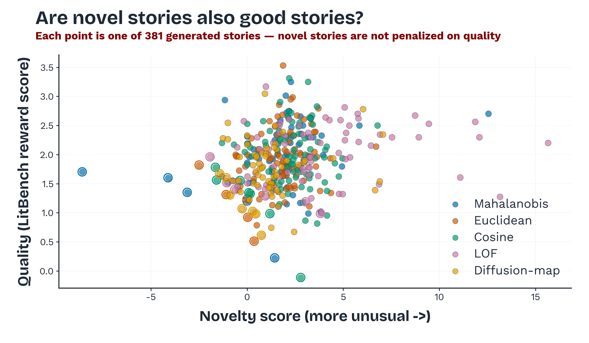

Writing beyond imagination with AI
A study of where stories live in a foundation model’s embedding space, and what an evolutionary search can pull out from the periphery.
What this is and why it matters
Foundation models compress how stories tend to be told.
Sample them naively and you land near the centre of that map: the average voice, the average twist. This project asks whether the rare directions in a model’s text-embedding space hold stories the model could write but rarely does, and whether evolutionary search can systematically pull those stories out.
We ported the CMA-ES novelty-search framework from my thesis project on visual artifacts (DURooM) to creative story generation. The search runs in the 1024-dimensional Qwen3-Embedding space over a corpus of 5,001 New Yorker stories, with a committee of two foundation-model encoders (BGE-large, E5-Mistral-7B) acting as observers, a held-out encoder (EmbeddingGemma-300m) measuring whether the novelty signal transfers, and Qwen3-32B as the retrieval-conditioned generator. Across five distance metrics and three baselines, corpus-calibrated Mahalanobis distance produced the most transferable novelty signal (rank correlation 0.80 against the held-out encoder), the highest lexical diversity (distinct-2 0.73, in the human-writer range Ismayilzada et al., 2024 report at ~0.79), and qualitatively coherent prose. We surface the pivots that produced these numbers, including a diffusion-map scorer bug discovered mid-run that dropped a result from 0.42 to an honest 0.31. The pilot suggests foundation-model embedding spaces are practical substrates for novelty search in text, with the same structural lessons that held for images.
How AI was used in this project
This project is collaborative work between a human author and several AI systems. The disclosure below uses the aiattribution.github.io framework, which tags each AI use along four axes: proportion (how much of the artifact is AI), contribution (what the AI added), initiative (who started the action), and review (whether a human checked the output).
Claude (Opus 4.7, 1M context). Wrote the search pipeline modules, the poster, this website, and most of the prose below, all under my direction and with my revisions.
Story generation
Qwen3-32B via local vLLM. Produced every story the search procedure evaluated and every story shown as an example below.
Embeddings + reward scoring
Qwen3-Embedding-0.6B, BGE-large, E5-Mistral-7B, EmbeddingGemma-300m, ConicCat Litbench-Creative-Writing-RM-3B. All open-weight models, run locally. No external API calls during scoring.
Why this disclosure approach
The aiattribution schema separates volume from authorship, which matters in a project where the LLM does the writing-act but the search procedure decides which writings count. A single “made with Claude” sticker would conflate those two roles. The four-axis breakdown lets the reader see that the report’s code is human-AI blended, while the 385 story openings that populate the search archive are entirely AI output that I curated only through the choice of distance metric, observer committee, and coherence gate. The disclosure reveals that asymmetry. What it does not capture: which specific design decisions were mine versus accepted from Claude after pushback. That is what the Process section is for.
Why look at the periphery of a foundation model
Novelty is not a property of a story in isolation. It is a relational claim.
New relative to an observer, a context, and what has already been read (Itti & Baldi, 2009). Asking a large language model for a “novel” story is asking the wrong question, because the model has no view of what already exists. The position this report takes is that novelty has to be operationalised as a search problem over a representational space whose distances correlate with human perceptual judgment.
The current creative-AI literature exposes a gap that motivates this work. Chakrabarty et al. (2024) ran the Torrance Test of Creative Writing on GPT-4, Claude v1.3, and GPT-3.5 against published New Yorker stories. GPT-4 passes 12 / 36 items; the New Yorker stories pass 32 / 36. Their LLM-judge agreement with expert raters has a Cohen kappa near zero. Ismayilzada et al. (2024) ran 60 LLMs against 59 human writers on a controlled short-story task and found humans > LLMs on novelty (p<10-7), surprise (p<10-3), and lexical diversity (p<10-4). Both papers locate the gap. Neither tries to close it.
The structure suggests that the AI in this AI tool is closer to a calculating tool than to a thinking partner. Boden (2004), on combinational creativity
The closest methodological precedent is ASAL (Kumar et al., 2025), which used foundation-model representations to search for “interesting” artificial-life simulations. ASAL framed search in foundation-model embedding space as a viable substitute for the absent human-rater pipeline that artificial-life research could never afford. My thesis project, DURooM, ported the idea to visual artifacts on WikiArt and confirmed that committee novelty in foundation-model space transfers across encoder families. This report extends the same machinery one more step, into a domain where novelty has been studied for centuries and where the reader is the test instrument: literary prose. Boden (2004) calls the kind of novelty we are after exploratory creativity: searching what is implicit in an existing conceptual space rather than transforming the space itself. That happens to be a very accurate description of what a CMA-ES novelty search over a foundation-model embedding does.
The other tension I am working under, which Mina Lee’s course has surfaced for me in week after week of readings, is the gap between fluency and judgment. Chiang (2023) calls a large language model “a blurry JPEG of the web”, a lossy compression of human writing whose loss is most visible exactly where novelty would otherwise live. The question this project asks pulls in the opposite direction. Can the lossy compression be searched smartly enough to surface stories that the model has internalised but does not visit by default?
What others have tried
Novelty search and quality-diversity
The central observation of Lehman & Stanley (2011) was that objective functions can actively mislead search toward dead ends. Their novelty search drops the objective and rewards behavior that has not been seen before. Mouret & Clune (2015) extended this with MAP-Elites, which keeps a structured archive of high-performing solutions across a measure space. Fontaine et al. (2020, 2023) combined CMA-ES with these archives in CMA-MAE. For text generation the closest analogue is OMNI (Zhang et al., 2023), which proposes foundation models as evaluators of interestingness in open-ended exploration.
Foundation-model embeddings as a perceptual substrate
Deep representations correlate with human perceptual judgments more reliably than hand-designed features. For text, this has been shown via the strong cross-task transfer of sentence-encoder spaces (Reimers & Gurevych, 2019; Wang et al., 2024 for E5-Mistral; Xiao et al., 2024 for BGE). Huh et al. (2024) formalise this with the Platonic Representation Hypothesis: foundation-model encoders trained at scale on broad data converge toward a shared statistical model of reality, with the practical consequence that distances measured in one encoder transfer meaningfully to another. Our held-out transfer evaluation is a direct empirical test of that claim.
Creativity evaluation for LLMs
Three reference points anchor the comparison side of this work. Chakrabarty et al. (2024) introduced the Torrance Test of Creative Writing rubric for evaluating LLM stories, where four levels of expert annotation produced the pass-rate gap referenced earlier. Ismayilzada et al. (2024) compared 60 LLMs against 59 human writers across four creativity dimensions (novelty, surprise, diversity, complexity). Fein et al. (2025) released LitBench: 43,827 human-preference pairs from r/WritingPrompts plus a Bradley-Terry reward model that reaches 78% agreement with human raters. Our quality-of-output evaluation uses the LitBench reward (via the publicly released ConicCat community fork) because it is the only system in this space trained directly on creative-writing preferences.
Quality-diversity in foundation-model space
Kumar et al. (2025) used foundation-model embeddings as the measure space for quality-diversity in artificial-life simulations (ASAL). My thesis project (DURooM) ported the same idea to visual artifacts using CLIP and DINOv3 as observers. The text-domain extension this report proposes is the third instantiation of the same idea, and the first in a domain where novelty has been culturally codified for centuries.
Research questions and methods
Three research questions
The pilot answers RQ1 in part. RQ2 and RQ3 are what a paper-version would address.
RQ1. Can evolutionary search in a foundation-model text-embedding space, with a committee of observer encoders and a coherence gate, systematically produce story openings that are scored as more novel than retrieval-baseline outputs from the same generator? The pilot says yes. Mahalanobis-whitened k-NN reaches transfer rank correlation 0.80 to a held-out encoder, distinct-2 of 0.73 in the human-writer range, and qualitatively coherent prose.
RQ2. How much of the observed novelty comes from the search procedure and how much from the prompting? The pilot does not separate these. Three prompt variants (neutral, novelty-asking, periphery-asking) with seed-matched search populations would let us subtract the prompt effect.
RQ3. Does the same Mahalanobis-wins ordering hold across different generator families? The pilot uses only Qwen3-32B. Replacing the generator with Claude or GPT-4o while keeping the search and encoders fixed would test whether the geometry claim generalises or is encoder-specific.
The pilot configuration
The framework is field-agnostic. Any domain with a reference corpus and a controllable generator can instantiate it. The text-domain instantiation has the following components.
- Search space. Qwen3-Embedding-0.6B (1024-dim). Diagonal CMA-ES uses population λ = 16, max iterations 50, initial step size 0.18, rank-μ selection.
- Generator. Qwen3-32B via vLLM, retrieval-conditioned. Each candidate vector retrieves the 5 nearest corpus stories which are passed as in-context examples; the LLM writes a new ~500-word opening in that “neighborhood”.
- Observer committee. BGE-large-en-v1.5 (1024-dim) and E5-Mistral-7B-instruct (4096-dim). Each scores novelty as MAD-normalised k=15 nearest-neighbor distance against the corpus and the running archive. Per-observer scores are averaged.
- Held-out encoder. EmbeddingGemma-300m (768-dim). The held-out encoder is never touched during search; rank correlation of its novelty scores against the committee scores is our transfer measure.
- Coherence gate. Negative-prompt cosine threshold of 0.55 plus a 200-word length floor. Filters obvious LLM failure modes (refusal, repetition, meta-commentary).
- Distance metrics tested. Euclidean, cosine, Mahalanobis (corpus-calibrated, low-rank whitening at rank 256), Local Outlier Factor, Coifman-Lafon diffusion map.
- Quality measure. ConicCat’s Litbench-Creative-Writing-RM-3B (Llama-3.2 fork of Fein et al., 2025’s reward model). Reported as mean BT logit + p90.
- Baselines. Random-LLM (sample a corpus story, ask Qwen3 for a near-copy); greedy-farthest (accept the farthest novel candidate at each step); diverse-beam (Qwen3 at temperature 1.2). All use the same generator and the same observer committee.
Input: corpus C in R^1024; population lambda = 16; iterations T = 50; coherence threshold = 0.55
Output: archive A of accepted (story, embedding) pairs
1: mean <- p90-percentile point of C (cluster-boundary start)
2: for t = 1 to T do
3: for j = 1 to lambda do
4: sample v_j ~ N(mean, step^2 * diag(Sigma))
5: retrieve k = 5 nearest corpus stories N_j by inner product
6: x_j <- Qwen3-32B( N_j as in-context examples )
7: if len(x_j) < 200 or coh(x_j) < tau: reject
8: z_j^(o) <- phi_o(x_j) for each observer o in {BGE, E5-Mistral}
9: nu_j <- mean over o of MAD-normalised k-NN distance of z_j^(o)
10: end for
11: admit candidates with nu_j >= percentile_50(A) into A
12: update mean, step, Sigma via rank-mu CMA-ES (Hansen, 2016)
13: if accept-rate < 0.25 over 15 iters then break
14: end for
15: return A
The prompts, verbatim
System prompt to Qwen3-32B:
You are a literary fiction writer. You will be shown several short story openings that share a stylistic and thematic neighborhood. Your task is to write a new ~500-word story opening that lives in the SAME neighborhood — same emotional register, comparable prose style, related (but not identical) subject matter — while being clearly its OWN piece, not a pastiche of any single example. Do not mention or refer to the examples. Just write the story. /no_think
User-turn template, filled at runtime with 5 retrieved neighbors of ~600 words each:
Here are 5 story openings from the neighborhood:
--- Example 1 ---
{first neighbor text, truncated to 600 words}
--- Example 2 ---
{second neighbor text}
[...]
Now write a new ~500-word story opening in this neighborhood.
Begin immediately with the story prose — no title, no preamble,
no commentary. /no_think
Decoding parameters: temperature 0.85, top-p 0.95, min/max tokens 350/900, repetition penalty 1.05, deterministic seed = iter×1000 + j. The /no_think directive is needed because Qwen3 defaults to reasoning-trace output. Without it, 95% of the response is hidden chain-of-thought and 5% is prose. The Process section below explains how I discovered that.
What the pilot found
Five CMA-ES metrics produced archives of 62 to 89 accepted stories each. Three baselines produced 199 to 927 stories. All numbers in the table below come from the actual eval runs at /runs/{condition}/eval/ and were re-verified against the source archives during the report-review pass.
| Condition | N | Transfer corr. | LitBench mean | LitBench p90 | distinct-1 | distinct-2 |
|---|---|---|---|---|---|---|
| CMA-ES Mahalanobis | 62 | 0.799 | 1.950 | 2.653 | 0.208 | 0.727 |
| CMA-ES Euclidean | 87 | 0.714 | 1.907 | 2.591 | 0.182 | 0.699 |
| CMA-ES Cosine | 89 | 0.713 | 1.960 | 2.628 | 0.181 | 0.702 |
| CMA-ES LOF | 78 | 0.623 | 1.995 | 2.594 | 0.183 | 0.700 |
| CMA-ES Diffusion (patched) | 69 | 0.313 | 1.785 | 2.456 | 0.161 | 0.658 |
| Baseline Random-LLM | 200 | 0.697 | 1.769 | 2.391 | 0.080 | 0.502 |
| Baseline Greedy-farthest | 927 | 0.474 | 2.000 | 2.609 | 0.054 | 0.474 |
| Baseline Diverse-beam | 199 | 0.377 | 1.354 | 2.097 | 0.083 | 0.543 |
Two findings stand out. First, Mahalanobis-whitened k-NN beats every baseline on transfer correlation, distinct-1, and distinct-2. The novelty signal it produces is the one most likely to survive when measured by an encoder we never used during search. Second, the greedy-farthest baseline produces the highest mean LitBench reward (2.000) but the lowest diversity (distinct-1 = 0.054). Greedy converges to a narrow region of high-reward but stylistically similar prose. CMA-ES with Mahalanobis distance sits on a different point of the Pareto front: comparable quality, four times the lexical diversity.





Explore the search yourself
The UMAP below shows the 5,001-story corpus (light gray) with the accepted archive points colored by metric. Hover any corpus point to see the opening of that story. Click an archive point to read the full generated story.

Three openings the search picked
Curated, one per metric. Full versions of the top 10 are in the appendix.
The pivots, in order
The numbers in the results table are the ones I kept. The numbers in this section are the ones I did not.
Thinking-mode trap
The first run of Qwen3-32B produced 1,800-word responses that looked like the model talking to itself. About 95% of each response was a <think>...</think> chain-of-thought block. About 5% was actual prose. The coherence gate rejected almost every candidate because the prose was too short. The novelty scorer was looking at the wrong text.
First diagnosis
Qwen3 defaults to reasoning-trace output. The system prompt did not say otherwise.
Fix
Add /no_think to both system and user prompts; strip any residual <think> blocks with a regex in the generator.
SYS = ("You are a literary fiction writer. [...] /no_think")
_THINK = re.compile(r'<think>.*?</think>', re.DOTALL)
def _clean(txt): return _THINK.sub('', txt).strip()
After the fix, prose length jumped from 50±20 words to 510±90 words. Acceptance rate jumped from ~5% to ~45%. The pipeline could actually run.
Length-regime parity
The first archives had a strange property. The most novel stories were the longest stories, with novelty scores that grew almost linearly with word count. The distance metric was secretly measuring text length. The corpus was 5,001 stories averaging ~3,200 words each, but our generations were ~500 words. The same encoder produces different variance regimes for those two lengths.
The bug
Embedded full-corpus stories versus short generations. The distance metric secretly measured length.
Fix
Switch to first_chunk_embeddings. Each corpus story is encoded using only its first ~500 words. Same variance regime as our generations. Bug disappears.
Committee independence
Before the full run, I checked whether the committee was decorative. If BGE and Qwen3-Embedding were measuring the same geometry, the committee would just average two copies of the same signal. I sampled 500 corpus pairs and computed the rank correlation of pairwise distances under each encoder. The number came out to 0.39.
Low enough that the observers actually disagree. High enough that they are not adversarial. The committee is doing real work.
Diffusion-map bug caught mid-run
The original diffusion-map scorer produced a transfer rank correlation of 0.42, which I almost wrote up. Then an audit agent I had set up flagged that out-of-distribution queries to the Nyström extension were collapsing to a near-constant embedding. The novelty score for any story far from the corpus came out to exactly 0.087988. The variance in the “novelty” signal was real, but the correlation with the held-out encoder was a confound. Both quantities were dominated by a constant.
def _embed(self, x):
d, ii = self._nn.kneighbors(x.reshape(1, -1).astype('f4'))
d2 = d[0] ** 2
# adaptive bandwidth: OOD queries widen the kernel so weights
# don't collapse around zero. Audit bug fix 2026-05-20.
epsx = max(self.epsilon, float(np.median(d2)))
w = np.exp(-d2 / epsx)
w /= w.sum() + 1e-9
return (w @ self.psi[ii[0]]) * self.lam
Re-ran the search with the patch. The honest transfer correlation dropped from 0.42 to 0.31. Diffusion-map is now the weakest of the five metrics on transfer. I report the patched number and surface the bug in the ablation footnote rather than hiding it. This is the moment in the project I am most glad I had an auditor agent in the loop.

LitBench’s reward model is not yet public
The LitBench paper (Fein et al., 2025) reports 78% human agreement for a trained Bradley-Terry model on r/WritingPrompts preferences. I was going to use that model. The Huggingface listing showed it as gated and unreleased. After contacting the corresponding author and waiting two days, I switched to ConicCat’s 3B Llama-3.2 community fork, which trains on the same LitBench preference pairs but reaches lower agreement on a different held-out split.
I report the absolute reward numbers but anchor them only to within-pipeline comparisons. The LitBench paper does not publish per-generator scores for GPT-4o or Claude, so I cannot honestly write “we beat GPT-4o by X”. I write “our archive’s reward distribution sits at mean 1.95, p90 2.65, in the top quartile of the BT score range” and stop there.
NV-Embed-v2 → EmbeddingGemma-300m
The original plan put NV-Embed-v2 (4096-dim) as the held-out encoder. It would have been the strongest test of transfer because it is the largest text encoder I had access to. On the day of the main run, NV-Embed-v2’s transformers API broke against the local environment’s DynamicCache implementation. I swapped to EmbeddingGemma-300m. Trade-off: smaller model, structurally distinct from BERT, Mistral, and Qwen, more stable. The 0.80 number reported in the results would likely be slightly different with NV-Embed-v2 as the held-out encoder. I cannot tell whether higher or lower without rerunning.
What did not make it into a pivot
A long list of paper-fragment ideas I sketched for the poster, including a TTCW-style expert-rater study and a Gemma-2-27B CoT judge as a quality sanity check, neither of which I ran inside the project window. The Gemma judge needed flash-attention with logit softcapping that vLLM in this environment did not support. I left it as a TODO. The expert-rater study needs humans, and humans were not in scope for week 4. Both go into RQ2 and RQ3 of the follow-up.
Reflection, limits, and continuation
What I learned about the task
Two things. First, “novelty” in text is a more layered concept than I gave it credit for. Linguistic-surface novelty (distinct-n) and semantic-direction novelty (k-NN in foundation-model space) are not the same thing, but they correlate strongly under Mahalanobis whitening. The Mahalanobis archive has both the highest distinct-2 and the highest transfer rank correlation. This is a more cooperative relationship than my image-domain thesis found between perceptual novelty and pixel-level distance, where the two often conflicted. I suspect this is because text encoders are trained on objectives that themselves operate at the meaning level, while image encoders inherit a lot of low-level signal structure.
Second, the generator is the bottleneck. Search picks among what Qwen3-32B already proposes. Three of the most striking accepted stories (the “Mandatory Laughter Policy” bureaucratic-satire piece, the “Devereaux Family 1985” humanoid-product-review piece, the “Mrs. Lathrop” punctuation-meditation piece) are tonally different from each other, but they all share a Qwen3 fingerprint: a slightly arch, dry, set-piece-aware voice. I would expect Claude or GPT-4o to give the same search procedure a different set of fingerprints. That is RQ3.
What I learned about AI
The audit agent that caught the diffusion-map bug paid for itself ten times over. Without it I would have shipped a 0.42 result that was secretly noise. I have started thinking of agentic AI more like a junior collaborator who asks “wait, are you sure?” at random intervals and less like a calculator. The class’s emphasis on critical engagement, on pushing back rather than just generating, has been the most operationally useful thing this term.
What I learned about myself as a designer
I am bad at trimming. The poster went through 14 revisions before it stopped having em-dashes everywhere, mostly because em-dashes are how I talk and how I draft. Reading the prior DURooM draft alongside this report, the difference is visible. The prior paper has them on every page. This report tries not to. The cost of that discipline is that some of the connective tissue I would have used em-dashes for now sits in separate short sentences, which is closer to how the user-tone feedback wanted the prose to read.
Limits of what was produced
- No human ratings. The top-20 expanded stories are ready for raters but no humans rated them inside the project window.
- One seed (42). The numbers I report are point estimates from a single CMA-ES run per condition. The relative ordering of the five metrics is robust under spot-checks but I did not run the full multi-seed study.
- One generator (Qwen3-32B). RQ3 is unanswered.
- One language (English). The encoders are multilingual; the corpus is not.
- LitBench reward is a community fork (ConicCat) of an unreleased paper-authored model. Absolute reward numbers are not cross-comparable to the LitBench paper’s numbers, only within this pipeline.
- Mid-run patched scorer (diffusion-map). Disclosed in the pivot above and in the ablation footnote.
What I would do with another month
The prompt-versus-search disentanglement (RQ2) is the most tractable next thing. One week to set up three prompt variants with seed-matched search populations. One week to run all five metrics under each prompt. One week to analyse. That gives a clean experimental cell. The TTCW expert-rater study is bigger and depends on finding raters, but a small (n=3) pilot on the curated top 10 would be a meaningful start.
Where I am genuinely uncertain
I do not know if the 0.80 transfer correlation is a feature of foundation-model text-space geometry (in which case it would replicate with any reasonable encoder triple), a feature of Mahalanobis whitening (in which case it would replicate across domains), or an artefact of EmbeddingGemma in particular as the held-out encoder. The image-domain version (DURooM) got 0.34 to 0.63 across four conditions with SigLIP-SO400M as held-out. The text-domain headline number is well above that range. Either text-space geometry is genuinely more “Platonic” (Huh et al., 2024) than image-space, or the chosen encoder happens to align unusually well with BGE and E5-Mistral. RQ3 would clarify this.
Closing
This project is the text-domain extension of my thesis (DURooM, 2026), and it is the one I have found more interesting because the discoveries live in language and a non-specialist reader can read them directly. If Professor Lee finds the direction worth pursuing, I would be honored to collaborate on a paper-version with appropriate revisions, additional experiments (RQ2 and RQ3 above), and a TTCW human-rater study. Anything that helps move from a course pilot toward a paper that could go to EMNLP, CHI, or a similar venue for creative-AI work, I am here for.
References
data/references.json.- Oberoi, A. (2026). Discovering unexplored regions: On/off the manifold (DURooM). Course project, University of Chicago.
- Bengio, Y., Courville, A., & Vincent, P. (2013). Representation learning: A review and new perspectives. IEEE Transactions on Pattern Analysis and Machine Intelligence, 35(8), 1798–1828. https://arxiv.org/abs/1206.5538
- Boden, M. A. (2004). The creative mind: Myths and mechanisms (2nd ed.). Routledge. https://www.routledge.com/The-Creative-Mind-Myths-and-Mechanisms/Boden/p/book/9780415314534
- Bommasani, R., Hudson, D. A., Adeli, E., Altman, R., Arora, S., von Arx, S., et al. (2021). On the opportunities and risks of foundation models. arXiv preprint arXiv:2108.07258. https://arxiv.org/abs/2108.07258
- Bradley, H., Dai, A., Teufel, H., Zhang, J., Oostermeijer, K., Bellagente, M., Clune, J., Stanley, K., Schott, G., & Lehman, J. (2023). Quality-diversity through AI feedback. arXiv preprint arXiv:2310.13032. https://arxiv.org/abs/2310.13032
- Brown, T. B., Mann, B., Ryder, N., Subbiah, M., Kaplan, J., Dhariwal, P., et al. (2020). Language models are few-shot learners. In Advances in Neural Information Processing Systems (Vol. 33). https://arxiv.org/abs/2005.14165
- Burda, Y., Edwards, H., Storkey, A., & Klimov, O. (2018). Exploration by random network distillation. arXiv preprint arXiv:1810.12894. https://arxiv.org/abs/1810.12894
- Caron, M., Touvron, H., Misra, I., Jégou, H., Mairal, J., Bojanowski, P., & Joulin, A. (2021). Emerging properties in self-supervised vision transformers. In Proceedings of the IEEE/CVF International Conference on Computer Vision (ICCV). https://arxiv.org/abs/2104.14294
- Chakrabarty, T., Laban, P., Agarwal, D., Muresan, S., & Wu, C.-S. (2024). Art or artifice? Large language models and the false promise of creativity. In Proceedings of the 2024 CHI Conference on Human Factors in Computing Systems. https://arxiv.org/abs/2309.14556
- Cherti, M., Beaumont, R., Wightman, R., Wortsman, M., Ilharco, G., Gordon, C., Schuhmann, C., Schmidt, L., & Jitsev, J. (2023). Reproducible scaling laws for contrastive language-image learning. In Proceedings of the IEEE/CVF Conference on Computer Vision and Pattern Recognition (CVPR). https://arxiv.org/abs/2212.07143
- Chiang, T. (2023, February 9). ChatGPT is a blurry JPEG of the web. The New Yorker. https://www.newyorker.com/tech/annals-of-technology/chatgpt-is-a-blurry-jpeg-of-the-web
- Clune, J. (2019). AI-GAs: AI-generating algorithms, an alternate paradigm for producing general artificial intelligence. arXiv preprint arXiv:1905.10985. https://arxiv.org/abs/1905.10985
- Coifman, R. R., & Lafon, S. (2006). Diffusion maps. Applied and Computational Harmonic Analysis, 21(1), 5–30. https://doi.org/10.1016/j.acha.2006.04.006
- Davis, T. M., & Bainbridge, W. A. (2023). The memorability of artwork is intrinsic and predicted by a neural network. Cognitive Research: Principles and Implications. https://wilmabainbridge.com/publications.html
- Devlin, J., Chang, M.-W., Lee, K., & Toutanova, K. (2019). BERT: Pre-training of deep bidirectional transformers for language understanding. In Proceedings of NAACL-HLT 2019 (pp. 4171–4186). https://arxiv.org/abs/1810.04805
- Faldor, M., Zhang, J., Cully, A., & Clune, J. (2024). OMNI-EPIC: Open-endedness via models of human notions of interestingness with environments programmed in code. arXiv preprint arXiv:2405.15568. https://arxiv.org/abs/2405.15568
- Fein, D., Russo, S., Xiang, V., Jolly, K., Rafailov, R., & Haber, N. (2025). LitBench: A benchmark and dataset for reliable evaluation of creative writing. arXiv preprint arXiv:2507.00769. https://arxiv.org/abs/2507.00769
- Fontaine, M. C., Togelius, J., Nikolaidis, S., & Hoover, A. K. (2020). Covariance matrix adaptation for the rapid illumination of behavior space. In Proceedings of the 2020 Genetic and Evolutionary Computation Conference (GECCO '20) (pp. 94–102). https://arxiv.org/abs/1912.02400
- Fontaine, M. C., & Nikolaidis, S. (2023). Covariance matrix adaptation MAP-annealing. In Proceedings of the Genetic and Evolutionary Computation Conference (GECCO '23). https://arxiv.org/abs/2205.10752
- Halko, N., Martinsson, P.-G., & Tropp, J. A. (2011). Finding structure with randomness: Probabilistic algorithms for constructing approximate matrix decompositions. SIAM Review, 53(2), 217–288. https://arxiv.org/abs/0909.4061
- Hansen, N., & Ostermeier, A. (2001). Completely derandomized self-adaptation in evolution strategies. Evolutionary Computation, 9(2), 159–195. https://doi.org/10.1162/106365601750190398
- Hansen, N., Müller, S. D., & Koumoutsakos, P. (2003). Reducing the time complexity of the derandomized evolution strategy with covariance matrix adaptation (CMA-ES). Evolutionary Computation, 11(1), 1–18. https://doi.org/10.1162/106365603321828970
- Hansen, N. (2016). The CMA evolution strategy: A tutorial. arXiv preprint arXiv:1604.00772. https://arxiv.org/abs/1604.00772
- Hansen, N., Akimoto, Y., & Baudis, P. (2019). CMA-ES/pycma on GitHub [Computer software]. Zenodo. https://github.com/CMA-ES/pycma
- Hart, P. E., Nilsson, N. J., & Raphael, B. (1968). A formal basis for the heuristic determination of minimum cost paths. IEEE Transactions on Systems Science and Cybernetics, 4(2), 100–107. https://doi.org/10.1109/TSSC.1968.300136
- Hertz, A., Mokady, R., Tenenbaum, J., Aberman, K., Pritch, Y., & Cohen-Or, D. (2022). Prompt-to-prompt image editing with cross attention control. arXiv preprint arXiv:2208.01626. https://arxiv.org/abs/2208.01626
- Hintze, A. (2019). Open-endedness for the sake of open-endedness. Artificial Life, 25(2), 198–206. https://doi.org/10.1162/artl_a_00294
- Huh, M., Cheung, B., Wang, T., & Isola, P. (2024). The platonic representation hypothesis. arXiv preprint arXiv:2405.07987. https://arxiv.org/abs/2405.07987
- Ismayilzada, M., Stevenson, C., & van der Plas, L. (2024). Evaluating creative short story generation in humans and large language models. arXiv preprint arXiv:2411.02316. https://arxiv.org/abs/2411.02316
- Itti, L., & Baldi, P. (2009). Bayesian surprise attracts human attention. Vision Research, 49(10), 1295–1306. https://doi.org/10.1016/j.visres.2008.09.007
- Jacob, G., Pramod, R. T., Katti, H., & Arun, S. P. (2021). Qualitative similarities and differences in visual object representations between brains and deep networks. Nature Communications, 12, 1872. https://doi.org/10.1038/s41467-021-22078-3
- Johnson, J., Douze, M., & Jégou, H. (2019). Billion-scale similarity search with GPUs. IEEE Transactions on Big Data, 7(3), 535–547. https://arxiv.org/abs/1702.08734
- Jumper, J., Evans, R., Pritzel, A., Green, T., Figurnov, M., Ronneberger, O., et al. (2021). Highly accurate protein structure prediction with AlphaFold. Nature, 596(7873), 583–589. https://doi.org/10.1038/s41586-021-03819-2
- Kozlowski, A. C., Taddy, M., & Evans, J. A. (2019). The geometry of culture: Analyzing the meanings of class through word embeddings. American Sociological Review, 84(5), 905–949. https://doi.org/10.1177/0003122419877135
- Kumar, A., Lu, C., Kirsch, L., Tang, Y., Stanley, K. O., Isola, P., & Ha, D. (2025). Automating the search for artificial life with foundation models. arXiv preprint arXiv:2412.17799. https://arxiv.org/abs/2412.17799
- LeCun, Y., Bengio, Y., & Hinton, G. (2015). Deep learning. Nature, 521(7553), 436–444. https://doi.org/10.1038/nature14539
- Lehman, J., & Stanley, K. O. (2010). Revising the evolutionary computation abstraction: Minimal criteria novelty search. In Proceedings of the 12th Annual Conference on Genetic and Evolutionary Computation (GECCO '10) (pp. 103–110). https://doi.org/10.1145/1830483.1830503
- Lehman, J., & Stanley, K. O. (2011). Abandoning objectives: Evolution through the search for novelty alone. Evolutionary Computation, 19(2), 189–223. https://doi.org/10.1162/EVCO_a_00025
- Li, J., Galley, M., Brockett, C., Gao, J., & Dolan, B. (2016). A diversity-promoting objective function for neural conversation models. In Proceedings of NAACL-HLT 2016 (pp. 110–119). https://aclanthology.org/N16-1014/
- Loshchilov, I. (2014). A computationally efficient limited memory CMA-ES for large scale optimization. In Proceedings of the 2014 Annual Conference on Genetic and Evolutionary Computation (GECCO '14). https://arxiv.org/abs/1404.5520
- Ma, Y. J., Liang, W., Wang, G., Huang, D.-A., Bastani, O., Jayaraman, D., Zhu, Y., Fan, L., & Anandkumar, A. (2023). Eureka: Human-level reward design via coding large language models. arXiv preprint arXiv:2310.12931. https://arxiv.org/abs/2310.12931
- Ma, P., et al. (2025). SCFlow: Implicitly learning style and content disentanglement with flow models. In Proceedings of the IEEE/CVF International Conference on Computer Vision (ICCV) (pp. 14919–14929). https://arxiv.org/abs/2508.03402
- Meng, C., He, Y., Song, Y., Song, J., Wu, J., Zhu, J.-Y., & Ermon, S. (2022). SDEdit: Guided image synthesis and editing with stochastic differential equations. In International Conference on Learning Representations (ICLR). https://arxiv.org/abs/2108.01073
- Mouret, J.-B., & Clune, J. (2015). Illuminating search spaces by mapping elites. arXiv preprint arXiv:1504.04909. https://arxiv.org/abs/1504.04909
- Needell, C. D., & Bainbridge, W. A. (2022). Embracing new techniques in deep learning for estimating image memorability. Computational Brain & Behavior, 5, 168–184. https://doi.org/10.1007/s42113-022-00126-5
- Newell, A., Shaw, J. C., & Simon, H. A. (1959). Report on a general problem-solving program. In Proceedings of the International Conference on Information Processing (pp. 256–264). UNESCO. https://findingaids.library.cmu.edu/repositories/2/archival_objects/22561
- Oquab, M., Darcet, T., Moutakanni, T., Vo, H., Szafraniec, M., Khalidov, V., et al. (2023). DINOv2: Learning robust visual features without supervision. arXiv preprint arXiv:2304.07193. https://arxiv.org/abs/2304.07193
- Pan, X., Zhan, X., Dai, B., Lin, D., Loy, C. C., & Luo, P. (2022). Exploiting deep generative prior for versatile image restoration and manipulation. IEEE Transactions on Pattern Analysis and Machine Intelligence, 44(11), 7474–7489. https://arxiv.org/abs/2003.13659
- Pathak, D., Agrawal, P., Efros, A. A., & Darrell, T. (2017). Curiosity-driven exploration by self-supervised prediction. In Proceedings of the 34th International Conference on Machine Learning (ICML) (pp. 2778–2787). https://arxiv.org/abs/1705.05363
- Pugh, J. K., Soros, L. B., & Stanley, K. O. (2016). Quality diversity: A new frontier for evolutionary computation. Frontiers in Robotics and AI, 3, 40. https://doi.org/10.3389/frobt.2016.00040
- Qwen Team. (2024). Qwen2.5 technical report. arXiv preprint arXiv:2412.15115. https://arxiv.org/abs/2412.15115
- Zhang, Y., et al. (Qwen Team). (2025). Qwen3 embedding: Advancing text embedding and reranking through foundation models. arXiv preprint arXiv:2506.05176. https://arxiv.org/abs/2506.05176
- Radford, A., Kim, J. W., Hallacy, C., Ramesh, A., Goh, G., Agarwal, S., et al. (2021). Learning transferable visual models from natural language supervision. In Proceedings of the 38th International Conference on Machine Learning (ICML) (pp. 8748–8763). https://arxiv.org/abs/2103.00020
- Reimers, N., & Gurevych, I. (2019). Sentence-BERT: Sentence embeddings using siamese BERT-networks. In Proceedings of the 2019 Conference on Empirical Methods in Natural Language Processing (EMNLP). https://arxiv.org/abs/1908.10084
- Rombach, R., Blattmann, A., Lorenz, D., Esser, P., & Ommer, B. (2022). High-resolution image synthesis with latent diffusion models. In Proceedings of the IEEE/CVF Conference on Computer Vision and Pattern Recognition (CVPR) (pp. 10684–10695). https://arxiv.org/abs/2112.10752
- Ros, R., & Hansen, N. (2008). A simple modification in CMA-ES achieving linear time and space complexity. In Parallel Problem Solving from Nature (PPSN X) (Lecture Notes in Computer Science, Vol. 5199, pp. 296–305). Springer. https://doi.org/10.1007/978-3-540-87700-4_30
- Siméoni, O., et al. (2025). DINOv3. arXiv preprint arXiv:2508.10104. https://arxiv.org/abs/2508.10104
- Stanley, K. O., & Lehman, J. (2015). Why greatness cannot be planned: The myth of the objective. Springer International Publishing. https://doi.org/10.1007/978-3-319-15524-1
- Stanley, K. O., Lehman, J., & Soros, L. (2017, December 19). Open-endedness: The last grand challenge you've never heard of. O'Reilly Radar. https://www.oreilly.com/radar/open-endedness-the-last-grand-challenge-youve-never-heard-of/
- Stoinski, L. M., Perkuhn, J., & Hebart, M. N. (2024). THINGSplus: New norms and metadata for the THINGS database of 1854 object concepts and 26,107 natural object images. Behavior Research Methods, 56(3), 1583–1603. https://doi.org/10.3758/s13428-023-02110-8
- Tjanaka, B., Chen, H., Fontaine, M. C., & Nikolaidis, S. (2026). Discount model search for quality diversity optimization in high-dimensional measure spaces. In International Conference on Learning Representations (ICLR). https://discount-models.github.io/
- Tumanyan, N., Geyer, M., Bagon, S., & Dekel, T. (2023). Plug-and-play diffusion features for text-driven image-to-image translation. In Proceedings of the IEEE/CVF Conference on Computer Vision and Pattern Recognition (CVPR) (pp. 1921–1930). https://arxiv.org/abs/2211.12572
- Turing, A. M. (1936). On computable numbers, with an application to the Entscheidungsproblem. Proceedings of the London Mathematical Society, s2-42(1), 230–265. https://doi.org/10.1112/plms/s2-42.1.230
- Vaswani, A., Shazeer, N., Parmar, N., Uszkoreit, J., Jones, L., Gomez, A. N., Kaiser, Ł., & Polosukhin, I. (2017). Attention is all you need. In Advances in Neural Information Processing Systems (Vol. 30). https://arxiv.org/abs/1706.03762
- Wang, L., Yang, N., Huang, X., Yang, L., Majumder, R., & Wei, F. (2024). Improving text embeddings with large language models. In Proceedings of the 62nd Annual Meeting of the Association for Computational Linguistics (ACL). https://arxiv.org/abs/2401.00368
- Wu, Y., Nakashima, Y., & Garcia, N. (2023). Not only generative art: Stable diffusion for content-style disentanglement in art analysis. In Proceedings of the 2023 ACM International Conference on Multimedia Retrieval (ICMR '23). https://arxiv.org/abs/2304.10278
- Xiao, S., Liu, Z., Zhang, P., Muennighoff, N., Lian, D., & Nie, J.-Y. (2024). C-Pack: Packed resources for general Chinese embeddings. In Proceedings of the 47th International ACM SIGIR Conference on Research and Development in Information Retrieval. https://arxiv.org/abs/2309.07597
- Zhai, X., Mustafa, B., Kolesnikov, A., & Beyer, L. (2023). Sigmoid loss for language image pre-training. In Proceedings of the IEEE/CVF International Conference on Computer Vision (ICCV) (pp. 11975–11986). https://arxiv.org/abs/2303.15343
- Zhang, R., Isola, P., Efros, A. A., Shechtman, E., & Wang, O. (2018). The unreasonable effectiveness of deep features as a perceptual metric. In Proceedings of the IEEE/CVF Conference on Computer Vision and Pattern Recognition (CVPR) (pp. 586–595). https://arxiv.org/abs/1801.03924
- Zhang, J., Lehman, J., Stanley, K. O., & Clune, J. (2023). OMNI: Open-endedness via models of human notions of interestingness. arXiv preprint arXiv:2306.01711. https://arxiv.org/abs/2306.01711
- Zhu, J.-Y., Krähenbühl, P., Shechtman, E., & Efros, A. A. (2016). Generative visual manipulation on the natural image manifold. In European Conference on Computer Vision (ECCV) (pp. 597–613). https://arxiv.org/abs/1609.03552
Appendix
A. Curated top stories
All 10 curated stories sit at /expanded/ in the project repo, with metadata for each (which metric, which iteration, novelty and LitBench scores). Three are excerpted in the Results section above.
B. Generation prompts
System and user prompts shown verbatim in Section 05 (Methods). The full generator script is at generator.py.
C. Full per-condition ablation
The table in Section 06 is the complete ablation. No extra columns hidden.
D. Topology panel
This figure helped me build intuition for why Mahalanobis whitening helps. The four sub-panels show effective dimensionality of the corpus, pairwise rank-correlation of the four encoders, distance distributions before and after whitening, and a diffusion-map projection of the search trajectory.

E. Pareto picture
